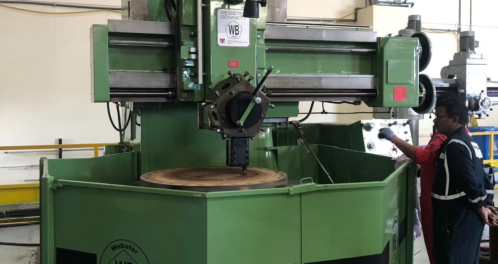

The only authorized source for genuine W&B OEM spare parts in the Americas — sourced directly from Webster & Bennett UK. Manufactured to original drawings, to original tolerances.
Common Consumables In Stock — Ships from Illinois
Clutch plates · Saddle nuts · Jaw screws · Shear pins · Brake parts
The parts our customers order most. Don't see what you need? We source the complete W&B parts catalog — contact us with your machine model and part description.
Scofield Machine Sales & Service, Inc. is the exclusive authorized reseller of genuine Webster Bennett spare parts and tooling for the Americas — sourced directly from Webster & Bennett UK since 1993.
We are committed to providing the highest standard of support for your Webster Bennett equipment, ensuring you have access to the genuine components you need — manufactured to original drawings and tolerances.
More About Us →
Have your machine model, table size, and serial number ready. Browse our catalog or describe the part — we can identify the right component from a description alone.
Call us at 847-427-9360, email us, or use the quote form. We respond same business day with availability and pricing.
Parts are sourced directly from Webster & Bennett UK and shipped to your facility. Genuine OEM parts on your schedule.
Most customers call us for years. Once we know your machine, reorders are fast. We keep records of what works for your specific installation.
When your machine is registered with us, we already know your series, table size, and service history before you call. No repeating yourself. No wrong parts.
We'll send you a parts reference sheet for your specific model — and alert you when consumables you need are in stock.
Register Your Machine →We coordinate field service through a vetted network of Webster & Bennett specialists. One call — we find the right tech for your machine and location.
Learn About Service →